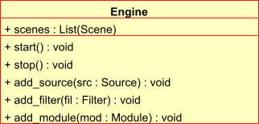

Advanced Scripting with Mayavi¶
As elaborated in the An overview of Mayavi section, mayavi can be scripted from Python in order to visualize data. Mayavi2 was designed from the ground up to be highly scriptable. Everything that can be done from the user interface can be achieved using Python scripts.
If you are not looking to script mayavi itself but looking for quick ways to get your visualization done with simple code you may want to check out mayavi’s mlab module. This is described in more detail in the Simple Scripting with mlab section.
To best understand how to script mayavi, a reasonable understanding of the mayavi internals is necessary. The following sections provides an overview of the basic design and objects in the mayavi pipeline. Subsequent sections consider specific example scripts that are included with the mayavi sources that illustrate the ideas.
Mayavi2 uses Traits and TVTK internally. Traits in many ways changes the way we program. So it is important to have a good idea of Traits in order to understand mayavi’s internals. If you are unsure of traits it is a good idea to get a general idea about traits now. Trust me, your efforts learning Traits will not be wasted!
Design Overview¶
This section provides a brief introduction to mayavi’s internal architecture.
The “big picture” of a visualization in mayavi is that an Engine (enthought.mayavi.engine.Engine) object manages the entire visualization. The Engine manages a collection of Scene (enthought.mayavi.core.scene.Scene) objects. In each Scene, a user may have created any number of Source (enthought.mayavi.core.source.Source) objects. A Source object can further contain any number of Filters (enthought.mayavi.core.filter.Filter) or ModuleManager (enthought.mayavi.core.module_manager.ModuleManager) objects. A Filter may contain either other filters or ModuleManagers. A ModuleManager manages any number of Modules. The figure below shows this hierarchy in a graphical form.

Illustration of the various objects in the mayavi pipeline.
This hierarchy is precisely what is seen in the Mayavi tree view on the UI. The UI is therefore merely a graphical representation of this internal world-view. A little more detail on these objects is given below. For even more details please refer to the sources.
All objects in the mayavi pipeline feature start and stop methods. The reasoning for this is that any object in mayavi is not usable (i.e. it may not provide any outputs) unless it has been started. Similarly the stop method “deactivates” the object. This is done because mayavi is essentially driving VTK objects underneath. These objects require inputs in order to do anything useful. Thus, an object that is not connected to the pipeline cannot be used. For example, consider an IsoSurface module. It requires some data in order to contour anything. Thus, the module in isolation is completely useless. It is usable only when it is added to the mayavi pipeline. When an object is added to the pipeline, its inputs are setup and its start method is called automatically. When the object is removed from the pipeline its stop method is called automatically.
Apart from the Engine object, all other objects in the mayavi pipeline feature a scene trait which refers to the current enthought.pyface.tvtk.tvtk_scene.TVTKScene instance that the object is associated with. The objects also feature an add_child method that lets one build up the pipeline by adding “children” objects. The add_child method is “intelligent” and will try to appropriately add the child in the right place.
Here is a brief description of the key objects in the mayavi pipeline.
- Engine
The Mayavi engine is defined in the enthought.mayavi.engine module.
- It possesses a scenes trait which is a Trait List of Scene objects.
- Features several methods that let one add a Filter/Source/Module instance to it. It allows one to create new scenes and delete them. Also has methods to load and save the entire visualization.
- The EnvisageEngine defined in the enthought.mayavi.envisage_engine module is a subclass of Engine and is the one used in the mayavi2 application. The Engine object is not abstract and itself perfectly usable. It is useful when users do not want to use Envisage but still desire to use mayavi for visualization.
- Scene
Defined in the enthought.mayavi.core.scene module.
- scene attribute: manages a TVTKScene (enthought.pyface.tvtk.tvtk_scene) object which is where all the rendering occurs.
- The children attribute is a List trait that manages a list of Source objects.
- PipelineBase
Defined in the enthought.mayavi.core.pipeline_base module. Derives from Base which merely abstracts out common functionality. The PipelineBase is the base class for all objects in the mayavi pipeline except the Scene and Engine (which really isn’t in the pipeline but contains the pipeline).
This class is characterized by two events, pipeline_changed and data_changed. These are Event traits. They determine when the pipeline has been changed and when the data has changed. Therefore, if one does:
object.pipeline_changed = Truethen the pipeline_changed event is fired. Objects downstream of object in the pipeline are automatically setup to listen to events from an upstream object and will call their update_pipeline method. Similarly, if the data_changed event is fired then downstream objects will automatically call their update_data methods.
The outputs attribute is a trait List of outputs produced by the object.
- Source
Defined in the enthought.mayavi.core.source module. All the file readers, Parametric surface etc. are subclasses of the Source class.
- Contains the rest of the pipeline via its children trait. This is a List of either Modules or other Filters.
- The outputs attribute is a trait List of outputs produced by the source.
- Filter
Defined in the enthought.mayavi.core.filter module. All the Filters described in the Filters section are subclasses of this.
Contains the rest of the pipeline via its children trait. This is a List of either Modules or other Filters.
The inputs attribute is a trait List of input data objects that feed into the filter.
The outputs attribute is a trait List of outputs produced by the filter.
Also features the three methods:
- setup_pipeline: used to create the underlying
TVTK pipeline objects if needed.
update_pipeline: a method that is called when the upstream pipeline has been changed, i.e. an upstream object fires a pipeline_changed event.
update_data: a method that is called when the upstream pipeline has not been changed but the data in the pipeline has been changed. This happens when the upstream object fires a data_changed event.
- ModuleManager
Defined in the enthought.mayavi.core.module_manager module. This object is the one called Modules in the tree view on the UI. The main purpose of this object is to manage Modules and share common data between them. All modules typically will use the same lookup table (LUT) in order to produce a meaningful visualization. This lookup table is managed by the module manager.
- The source attribute is the Source or Filter object that is the input of this object.
- Contains a list of Modules in its children trait.
- The scalar_lut_manager attribute is an instance of a LUTManager which basically manages the color mapping from scalar values to colors on the visualizations. This is basically a mapping from scalars to colors.
- The vector_lut_manager attribute is an instance of a LUTManager which basically manages the color mapping from vector values to colors on the visualizations.
- The class also features a lut_data_mode attribute that specifies the data type to use for the LUTs. This can be changed between ‘auto’, ‘point data’ and ‘cell data’. Changing this setting will change the data range and name of the lookup table/legend bar. If set to ‘auto’ (the default), it automatically looks for cell and point data with point data being preferred over cell data and chooses the one available. If set to ‘point data’ it uses the input point data for the LUT and if set to ‘cell data’ it uses the input cell data.
- Module
Defined in the enthought.mayavi.core.module module. These objects are the ones that typically produce a visualization on the TVTK scene. All the modules defined in the Modules section are subclasses of this.
The components attribute is a trait List of various reusable components that are used by the module. These usually are never used directly by the user. However, they are extremely useful when creating new modules. A Component is basically a reusable piece of code that is used by various other objects. For example, almost every Module uses a TVTK actor, mapper and property. These are all “componentized” into a reusable Actor component that the modules use. Thus, components are a means to promote reuse between mayavi pipeline objects.
The module_manager attribute specifies the ModuleManager instance that it is attached to.
Like the Filter modules also feature the three methods:
- setup_pipeline: used to create the underlying
TVTK pipeline objects if needed.
update_pipeline: a method that is called when the upstream pipeline has been changed, i.e. an upstream object fires a pipeline_changed event.
update_data: a method that is called when the upstream pipeline has not been changed but the data in the pipeline has been changed. This happens when the upstream object fires a data_changed event.
The following figures show the class hierarchy of the various objects involved.
The ``Engine`` object and its important attributes and methods.

This hierarchy depicts the ``Base`` object, the ``Scene``, ``PipelineBase`` and the ``ModuleManager``.

This hierarchy depicts the ``PipelineBase`` object, the ``Source``, ``Filter``, ``Module`` and the ``Component``.
Scripting the mayavi2 application¶
The mayavi2 application is implemented in the enthought.mayavi.scripts.mayavi2 module (look at the mayavi2.py file and not the mayavi2 script). This code handles the command line argument parsing and runs the application.
mayavi2 is an Envisage application. It starts the Envisage application in its main method. The code for this is in the enthought.mayavi.app module. Mayavi uses several envisage plugins to build up its functionality. These plugins are defined in the enthought.mayavi.plugin_definitions module. In this module there are two lists of plugins defined, PLUGIN_DEFINITIONS and the NONGUI_PLUGIN_DEFINITIONS. The default application uses the former which produces a GUI that the user can use. If one uses the latter (NONGUI_PLUGIN_DEFINITIONS) then the mayavi tree view, object editor and menu items will not be available when the application is run. This allows a developer to create an application that uses mayavi but does not show its user interface. An example of how this may be done is provided in examples/nongui.py.
Scripting from the UI¶
When using the mayavi2 application, it is possible to script from the embedded Python interpreter on the UI. On the interpreter the name mayavi is automatically bound to an enthought.mayavi.script.Script instance that may be used to easily script mayavi. This instance is a simple wrapper object that merely provides some nice conveniences while scripting from the UI. It has an engine trait that is a reference to the running mayavi engine.
As described in The embedded Python interpreter section, one can always drag a mayavi object from the tree and drop it on the interpreter to script it directly.
One may select the File->Open File... menu to open an existing Python file in the text editor, or choose the File->New File menu to create a new file. The text editor is Python-aware and one may write a script assuming that the mayavi name is bound to the Script instance as it is on the shell. To execute this script one can press Control-r as described earlier. Control-s will save the script.
The nice thing about this kind of scripting is that if one scripts something on the interpreter or on the editor, one may save the contents to a file, say script.py and then the next time mayavi run it like so:
$ mayavi2 -x script.py
This will execute the script for automatically. The name mayavi is available to the script and is bound to the Script instance. This is very convenient. It is possible to have mayavi execute multiple scripts. For example:
$ mayavi2 -d foo.vtk -m IsoSurface -x setup_iso.py -x script2.py
will load the foo.vtk file, create an IsoSurface module, then run setup_iso.py and then run script2.py.
There are several scripts in the mayavi examples directory that should show how this can be done. The examples/README.txt contains some information on the recommended ways to script.
Scripting from IPython¶
It is possible to script Mayavi using IPython. IPython will have to be invoked with the -wthread command line option in order to allow one to interactively script the mayavi application:
$ ipython -wthread
To start a visualization do the following:
from enthought.mayavi.app import main
# Note, this does not process any command line arguments.
mayavi = main()
# 'mayavi' is the mayavi Script instance.
It is also possible to use mlab (see Simple Scripting with mlab) for this purpose:
from enthought.mayavi.tools import mlab
f = mlab.figure() # Returns the current scene.
mayavi = mlab.get_mayavi() # Returns the Script instance.
With this it should be possible to script mayavi just the way it is done on the embedded interpreter or on the text editor.
An example¶
Here is an example script that illustrates various features of scripting mayavi:
# Create a new mayavi scene.
mayavi.new_scene()
# Get the current active scene.
s = mayavi.engine.current_scene
# Read a data file.
from enthought.mayavi.sources.api import VTKXMLFileReader
d = VTKXMLFileReader()
# You must specify the full path to the data here.
d.initialize('fire_ug.vtu')
mayavi.add_source(d)
# Import a few modules.
from enthought.mayavi.modules.api import Outline, IsoSurface, Streamline
# Show an outline.
o = Outline()
mayavi.add_module(o)
o.actor.property.color = 1, 0, 0 # red color.
# Make a few contours.
iso = IsoSurface()
mayavi.add_module(iso)
iso.contour.contours = [450, 570]
# Make them translucent.
iso.actor.property.opacity = 0.4
# Show the colormapping.
iso.module_manager.scalar_lut_manager.show_scalar_bar = True
# A streamline.
st = Streamline()
mayavi.add_module(st)
# Position the seed center.
st.seed.widget.center = 3.5, 0.625, 1.25
st.streamline_type = 'tube'
# Save the resulting image.
s.scene.save('test.png')
# Make an animation:
for i in range(36):
# Rotate the camera by 10 degrees.
s.scene.camera.azimuth(10)
# Resets the camera clipping plane so everything fits and then
# renders.
s.scene.reset_zoom()
# Save the scene.
s.scene.save_png('anim%d.png'%i)
Sometimes, given a mayavi Script instance or Engine, it is handy to be able to navigate to a particular module/object. In the above this could be achieved as follows:
x = mayavi.engine.scenes[0].children[0].children[0].children[-1]
print x
In this case x will be set to the Streamline instance that we just created.
There are plenty of examples illustrating various things in the examples directory. These are all fairly well documented.
In particular, the standalone.py example illustrates how one can script mayavi without using the envisage application at all. The offscreen.py example illustrates how this may be done using off screen rendering (if supported by your particular build of VTK).
examples/README.txt contains some information on the recommended ways to script and some additional information.
Using the mayavi envisage plugins¶
The mayavi related plugin definitions to use are:
- mayavi_plugin_definition.py
- mayavi_ui_plugin_definition.py
These are in the enthought.mayavi package. To see an example of how to use this see the enthought.mayavi.plugin_definitions module and the enthought.mayavi.app module.
If you are writing Envisage plugins for an application and desire to use the mayavi plugins from your plugins/applications then it is important to note that mayavi creates three application objects for your convenience. These are:
- enthought.mayavi.services.IMAYAVI: This is an enthought.mayavi.script.Script instance that may be used to easily script mayavi. It is a simple wrapper object that merely provides some nice conveniences while scripting from the UI. It has an engine trait that is a reference to the running mayavi engine.
- enthought.mayavi.services.IMAYAVI_ENGINE: This is the running mayavi engine instance.
- enthought.mayavi.services.IMAYAVI_ENGINE_VIEW: This is the view of the engine and is only exposed if the mayavi_ui_plugin_definition.py is used.
A simple example that demonstrates the use of the mayavi plugin in an envisage application is included in the examples/explorer directory. This may be studied to understand how you may do the same in your envisage applications.